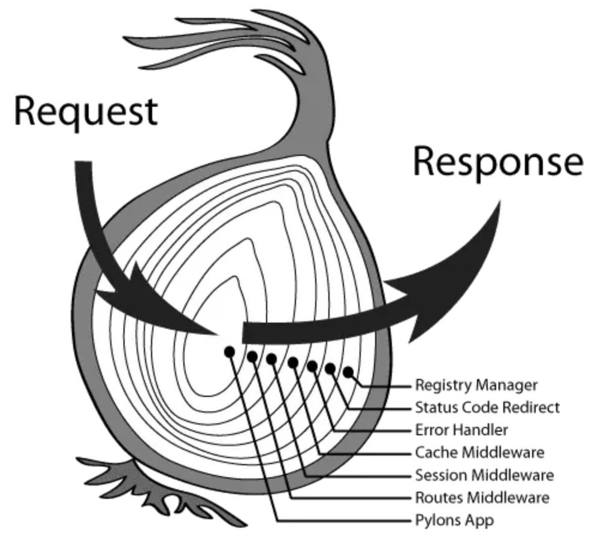
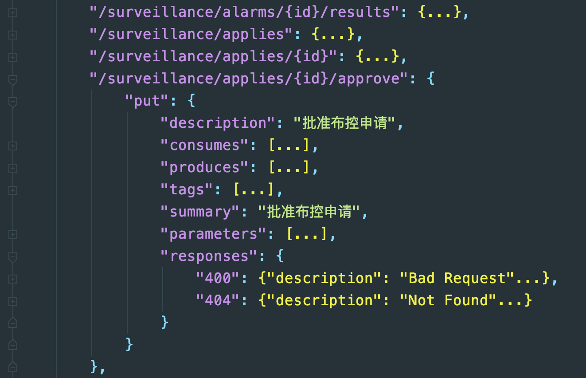
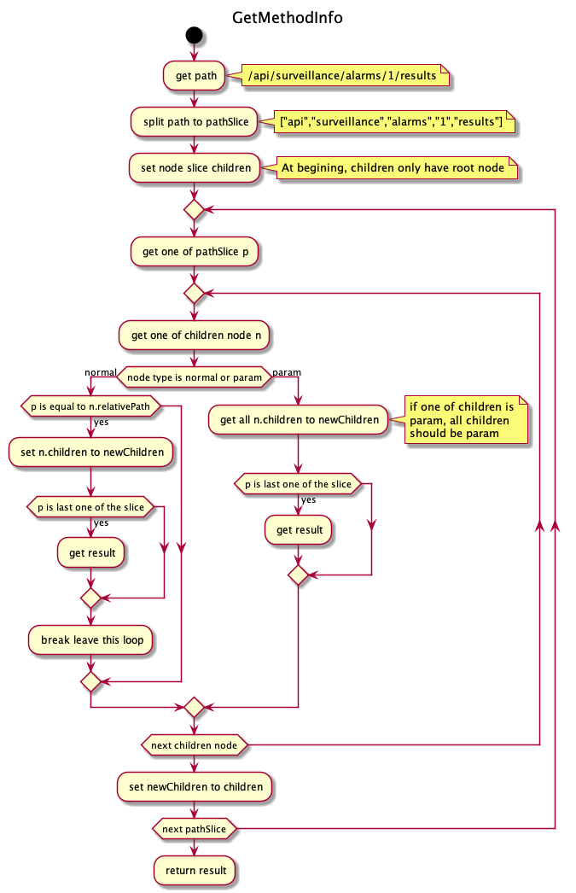

业务日志不同于系统日志，系统日志主要用于Debug过程中，而业务日志直接面向用户，是用户操作行为的记录，项目中一般针对HTTP请求来记录业务日志，但HTTP请求函数较多，如果在每个API请求的函数中都加上记录业务日志的代码，会造成代码大量重复且低效。可以将业务日志模块独立出来，集成到中间件中，每次HTTP请求自动调用中间件模块记录业务日志。
中间件
中间件在golang中是一个很重要的概念，类似于Java中的拦截器，中间件实现了业务隔离，比如业务日志模块就可以从具体业务中抽离出来，不需要在每个业务请求代码中插入记录业务日志的代码块。
在golang中，中间件的代码块形式如func MyMiddleware()所示，gin.Context中包含业务所需的上下文，比如HTTP请求的信息；c.Next()用来实现业务流的下发控制，在众多中间件中会形成一条中间件链，通过中间件中的Next()函数对后续的中间件进行执行，而在每个中间件中，Next()函数前的内容在请求之前执行，Next()函数之后的内容在请求之后执行。
1 | func MyMiddleware() gin.HandleFunc { |
多个中间件会形成一个栈结构，以先进先出的顺序执行，也被称为洋葱结构，如下图所示，在Request请求之前会调用所有注册的中间件，并通过Next函数一层层深入，直到所有中间件的Next都调用完成，执行Request，并拿到Response，然后通过回调函数逆序执行所有中间件中Next函数之后的内容。
使用中间件之后，记录业务日志模块只需要从Request中获取到请求的Path，以及从Response中获取返回的结果，就可以从swagger.json中根据Path获取详细的业务描述，以及对应的结果。
Swagger
Swagger是一个规范和完整的框架，是用于生成、描述、调用和可视化Restful风格的Web服务。Swagger对每一个操作的请求消息的参数，响应消息的状态码等都进行了详细的描述，Swagger文档可直接从代码注释中自动生成。
生成的swagger.json文件格式如下图所示：
获取Path summary
我们需要根据请求的API路径在swagger.json中查找到对应的path以及描述信息，拿上图举例，实际请求的path是/api/surveillance/applies/1/approve，需要对应到swagger中的/api/surveillance/applies/{id}/approve，在参数1到{id}的匹配上会存在一点难度。
将swagger中path存储为树结构
由于所有path都是从/api延续下去，因此可以使用树结构存储swagger.json中所有的path，也便于一层层地往下查找路径。
树中节点的结构设计如下，包含当前节点的相对路径path，所有子节点children，该节点如果是叶子节点则包含对应的request method和response信息，如果不是叶子节点，则为空，最后还有节点的类型，分为普通类型和参数类型。
1 | type node struct { |
从swagger tree树中检索
从swagger tree中检索path时，流程图如下图GetMethodInfo所示，将请求的实际path分割为一个pathSlice，依次拿pathSlice中的p去树中遍历查找，如果树中该节点是普通类型，则判断p和节点的相对路径是否相同，如果该节点是参数类型，则默认匹配children中所有节点，进行下一层的遍历，因为children中如果又一个子节点是参数类型，那么所有的子节点都是参数类型，这是由request请求的性质决定的。遍历完pathSlice中最后一个元素则结束循环，返回取到的结果。
最终根据获取到的请求描述信息，以及返回的结果生成对应的业务日志，例如：用户admin批准布控申请 成功or失败。